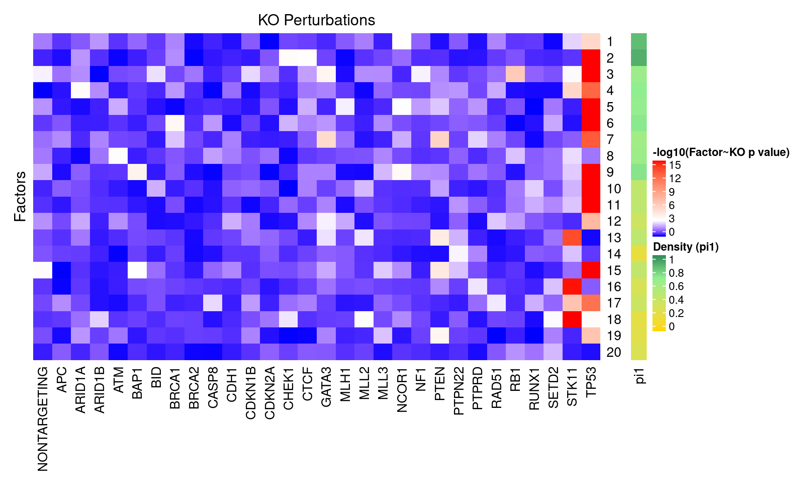
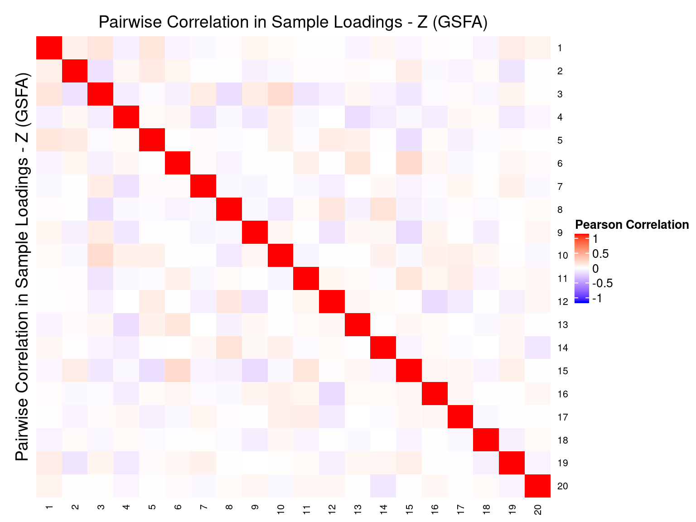
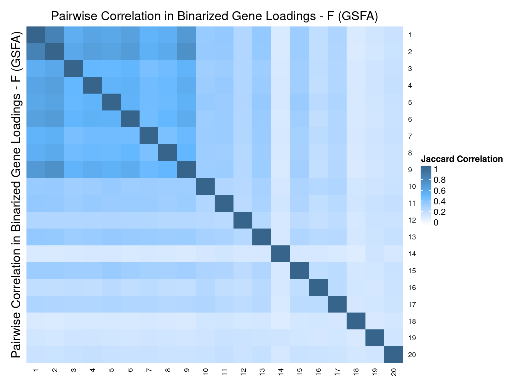
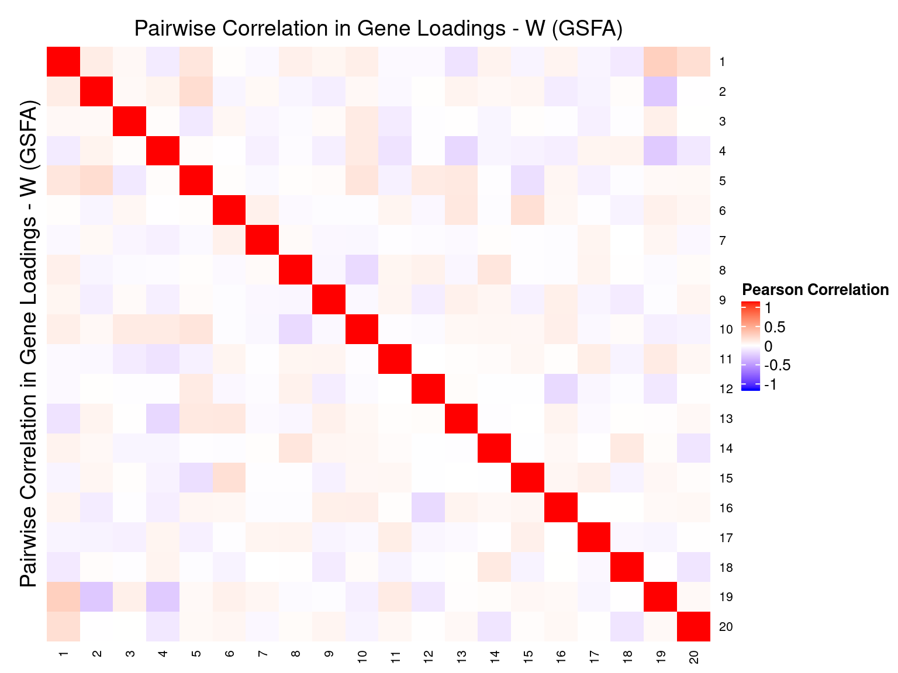

Guided Factor Analysis on MCF10A Treated
– Genes Filtered by Detection Rate
Yifan Zhou (zhouyf@uchicago.edu)
2020-11-12
1 Single cell expression data
CROP-seq data are from this paper: On the design of CRISPR-based single cell molecular screens, GEO accession: GSE108699.
Perturbations:
Knock-outs of 29 tumor-suppressor genes (TP53, …), 1 non-targeting control.
Cells:
MCF10A cells (normal human breast epithelial cells) with exposure to a DNA damaging agent, doxorubicin.
Only cells with gRNA readout were kept, resulted in 5584 cells.
Genes:
Only genes detected in > 10% of cells were kept, resulted in 8046 genes.
Normalization:
Seurat “LogNormalize”: log(count per 10K + 1).
Library size was regressed out, and the residuals were used as input.
2 Factor correlation results
Guided sparse factor analysis, with the \(G\) matrix being 30 types of KO conditions across cells.
2.1 SVD Initialization


2.2 Random Initialization
2.3 Difference btw Methods in Factor Estimation
For a pair of \(Z\) estimations from 2 inference methods, \(Z_1, Z_2\), we quantify the pairwise estimation difference as \(||Z_1Z_1^T - Z_2Z_2^T||_1/N^2\), where \(N\) is the number of rows (samples) in \(Z\).
Guided SVD vs Rand_01: 0.627
Guided SVD vs Rand_02: 0.622
Rand_01 vs Rand_02: 0.739
Guided SVD vs Unguided: 0.449
2.4 Correlation btw Factors



3 Gene Ontology Enrichment Analysis
Genes w/ non-zero loadings vs all genes selected for factor analysis.
GO category: Biological Process.
3.1 PIP cutoff at 0.5
GO terms that passed overrpresentation analysis fold change \(\geq\) 2 and q value \(<\) 0.05:
| ID | Description | GeneRatio | BgRatio | FoldChange | qvalue |
|---|---|---|---|---|---|
| GO:0031424 | keratinization | 31/2666 | 40/7132 | 2.07 | 0.000035 |
| GO:0050954 | sensory perception of mechanical stimulus | 27/2666 | 35/7132 | 2.06 | 0.000168 |
| GO:0070268 | cornification | 24/2666 | 31/7132 | 2.07 | 0.000479 |
| GO:0007605 | sensory perception of sound | 24/2666 | 32/7132 | 2.01 | 0.001118 |
| GO:0031581 | hemidesmosome assembly | 11/2666 | 12/7132 | 2.45 | 0.007738 |
| GO:0019730 | antimicrobial humoral response | 17/2666 | 22/7132 | 2.07 | 0.007874 |
| GO:0061333 | renal tubule morphogenesis | 16/2666 | 21/7132 | 2.04 | 0.012417 |
| GO:0061844 | antimicrobial humoral immune response mediated by antimicrobial peptide | 13/2666 | 16/7132 | 2.17 | 0.014144 |
| GO:2000243 | positive regulation of reproductive process | 11/2666 | 13/7132 | 2.26 | 0.017432 |
| GO:0034113 | heterotypic cell-cell adhesion | 15/2666 | 20/7132 | 2.01 | 0.017793 |
| GO:0090303 | positive regulation of wound healing | 15/2666 | 20/7132 | 2.01 | 0.017793 |
| GO:0042730 | fibrinolysis | 9/2666 | 10/7132 | 2.41 | 0.022606 |
| GO:0031639 | plasminogen activation | 10/2666 | 12/7132 | 2.23 | 0.030273 |
| GO:0070098 | chemokine-mediated signaling pathway | 10/2666 | 12/7132 | 2.23 | 0.030273 |
| GO:0046676 | negative regulation of insulin secretion | 12/2666 | 16/7132 | 2.01 | 0.038901 |
| GO:0060675 | ureteric bud morphogenesis | 12/2666 | 16/7132 | 2.01 | 0.038901 |
| GO:0072171 | mesonephric tubule morphogenesis | 12/2666 | 16/7132 | 2.01 | 0.038901 |
| GO:1990868 | response to chemokine | 12/2666 | 16/7132 | 2.01 | 0.038901 |
| GO:1990869 | cellular response to chemokine | 12/2666 | 16/7132 | 2.01 | 0.038901 |
| GO:0048247 | lymphocyte chemotaxis | 9/2666 | 11/7132 | 2.19 | 0.044449 |
| ID | Description | GeneRatio | BgRatio | FoldChange | qvalue |
|---|---|---|---|---|---|
| GO:0042773 | ATP synthesis coupled electron transport | 62/2668 | 80/7132 | 2.07 | 3.15e-10 |
| GO:0042775 | mitochondrial ATP synthesis coupled electron transport | 61/2668 | 79/7132 | 2.06 | 4.96e-10 |
| GO:0006120 | mitochondrial electron transport, NADH to ubiquinone | 39/2668 | 47/7132 | 2.22 | 4.80e-08 |
| GO:0099132 | ATP hydrolysis coupled cation transmembrane transport | 25/2668 | 33/7132 | 2.03 | 6.50e-04 |
| GO:0015985 | energy coupled proton transport, down electrochemical gradient | 17/2668 | 20/7132 | 2.27 | 1.22e-03 |
| GO:0015986 | ATP synthesis coupled proton transport | 17/2668 | 20/7132 | 2.27 | 1.22e-03 |
| GO:0015988 | energy coupled proton transmembrane transport, against electrochemical gradient | 17/2668 | 20/7132 | 2.27 | 1.22e-03 |
| GO:0000028 | ribosomal small subunit assembly | 13/2668 | 15/7132 | 2.32 | 7.88e-03 |
| GO:0006122 | mitochondrial electron transport, ubiquinol to cytochrome c | 11/2668 | 12/7132 | 2.45 | 9.24e-03 |
| GO:0015991 | ATP hydrolysis coupled proton transport | 13/2668 | 16/7132 | 2.17 | 2.14e-02 |
| GO:0042776 | mitochondrial ATP synthesis coupled proton transport | 13/2668 | 16/7132 | 2.17 | 2.14e-02 |
| GO:0090662 | ATP hydrolysis coupled transmembrane transport | 13/2668 | 16/7132 | 2.17 | 2.14e-02 |
| GO:0099131 | ATP hydrolysis coupled ion transmembrane transport | 13/2668 | 16/7132 | 2.17 | 2.14e-02 |
| GO:0008334 | histone mRNA metabolic process | 15/2668 | 20/7132 | 2.00 | 3.18e-02 |
| ID | Description | GeneRatio | BgRatio | FoldChange | qvalue |
|---|---|---|---|---|---|
| GO:0000184 | nuclear-transcribed mRNA catabolic process, nonsense-mediated decay | 74/2026 | 108/7132 | 2.41 | 1.44e-14 |
| GO:0045047 | protein targeting to ER | 69/2026 | 101/7132 | 2.40 | 1.20e-13 |
| GO:0006614 | SRP-dependent cotranslational protein targeting to membrane | 64/2026 | 91/7132 | 2.48 | 1.20e-13 |
| GO:0072599 | establishment of protein localization to endoplasmic reticulum | 70/2026 | 104/7132 | 2.37 | 1.31e-13 |
| GO:0006613 | cotranslational protein targeting to membrane | 65/2026 | 95/7132 | 2.41 | 3.69e-13 |
| GO:0070972 | protein localization to endoplasmic reticulum | 76/2026 | 122/7132 | 2.19 | 2.80e-12 |
| GO:0006749 | glutathione metabolic process | 19/2026 | 26/7132 | 2.57 | 5.29e-04 |
| GO:0007338 | single fertilization | 24/2026 | 41/7132 | 2.06 | 5.67e-03 |
| GO:0031581 | hemidesmosome assembly | 10/2026 | 12/7132 | 2.93 | 1.15e-02 |
| GO:0035036 | sperm-egg recognition | 11/2026 | 14/7132 | 2.77 | 1.29e-02 |
| GO:0010712 | regulation of collagen metabolic process | 13/2026 | 20/7132 | 2.29 | 3.87e-02 |
| ID | Description | GeneRatio | BgRatio | FoldChange | qvalue |
|---|---|---|---|---|---|
| GO:0015985 | energy coupled proton transport, down electrochemical gradient | 17/2716 | 20/7132 | 2.23 | 0.00137 |
| GO:0015986 | ATP synthesis coupled proton transport | 17/2716 | 20/7132 | 2.23 | 0.00137 |
| GO:0007157 | heterophilic cell-cell adhesion via plasma membrane cell adhesion molecules | 10/2716 | 10/7132 | 2.63 | 0.00284 |
| GO:0042776 | mitochondrial ATP synthesis coupled proton transport | 14/2716 | 16/7132 | 2.30 | 0.00289 |
| GO:0034113 | heterotypic cell-cell adhesion | 16/2716 | 20/7132 | 2.10 | 0.00534 |
| GO:0045214 | sarcomere organization | 11/2716 | 13/7132 | 2.22 | 0.01938 |
| GO:0006465 | signal peptide processing | 9/2716 | 10/7132 | 2.36 | 0.02417 |
| GO:2000811 | negative regulation of anoikis | 9/2716 | 10/7132 | 2.36 | 0.02417 |
| GO:0048662 | negative regulation of smooth muscle cell proliferation | 12/2716 | 15/7132 | 2.10 | 0.02491 |
| GO:0060038 | cardiac muscle cell proliferation | 13/2716 | 17/7132 | 2.01 | 0.02838 |
| GO:0006122 | mitochondrial electron transport, ubiquinol to cytochrome c | 10/2716 | 12/7132 | 2.19 | 0.03239 |
| GO:0035767 | endothelial cell chemotaxis | 10/2716 | 12/7132 | 2.19 | 0.03239 |
| GO:0090201 | negative regulation of release of cytochrome c from mitochondria | 11/2716 | 14/7132 | 2.06 | 0.03871 |
| GO:1902043 | positive regulation of extrinsic apoptotic signaling pathway via death domain receptors | 11/2716 | 14/7132 | 2.06 | 0.03871 |
| ID | Description | GeneRatio | BgRatio | FoldChange | qvalue |
|---|---|---|---|---|---|
| GO:0006614 | SRP-dependent cotranslational protein targeting to membrane | 72/1035 | 91/7132 | 5.45 | 2.25e-40 |
| GO:0045047 | protein targeting to ER | 76/1035 | 101/7132 | 5.19 | 2.91e-40 |
| GO:0072599 | establishment of protein localization to endoplasmic reticulum | 77/1035 | 104/7132 | 5.10 | 4.01e-40 |
| GO:0006613 | cotranslational protein targeting to membrane | 73/1035 | 95/7132 | 5.30 | 5.63e-40 |
| GO:0070972 | protein localization to endoplasmic reticulum | 82/1035 | 122/7132 | 4.63 | 6.72e-38 |
| GO:0000184 | nuclear-transcribed mRNA catabolic process, nonsense-mediated decay | 75/1035 | 108/7132 | 4.79 | 4.27e-36 |
| GO:0006413 | translational initiation | 96/1035 | 168/7132 | 3.94 | 5.46e-36 |
| GO:0006612 | protein targeting to membrane | 80/1035 | 142/7132 | 3.88 | 4.45e-29 |
| GO:0006412 | translation | 160/1035 | 496/7132 | 2.22 | 5.74e-23 |
| GO:0006402 | mRNA catabolic process | 100/1035 | 246/7132 | 2.80 | 5.80e-22 |
| GO:0000956 | nuclear-transcribed mRNA catabolic process | 81/1035 | 176/7132 | 3.17 | 1.02e-21 |
| GO:0090150 | establishment of protein localization to membrane | 93/1035 | 221/7132 | 2.90 | 1.12e-21 |
| GO:0006401 | RNA catabolic process | 102/1035 | 268/7132 | 2.62 | 6.30e-20 |
| GO:0006605 | protein targeting | 109/1035 | 311/7132 | 2.42 | 3.77e-18 |
| GO:0034655 | nucleobase-containing compound catabolic process | 123/1035 | 375/7132 | 2.26 | 6.01e-18 |
| GO:0044270 | cellular nitrogen compound catabolic process | 124/1035 | 385/7132 | 2.22 | 2.19e-17 |
| GO:0046700 | heterocycle catabolic process | 123/1035 | 383/7132 | 2.21 | 3.88e-17 |
| GO:1901361 | organic cyclic compound catabolic process | 125/1035 | 398/7132 | 2.16 | 1.45e-16 |
| GO:0019439 | aromatic compound catabolic process | 123/1035 | 392/7132 | 2.16 | 2.95e-16 |
| GO:0072657 | protein localization to membrane | 114/1035 | 354/7132 | 2.22 | 6.39e-16 |
| GO:0072594 | establishment of protein localization to organelle | 121/1035 | 399/7132 | 2.09 | 1.06e-14 |
| GO:0002181 | cytoplasmic translation | 39/1035 | 78/7132 | 3.45 | 1.65e-11 |
| GO:0046034 | ATP metabolic process | 58/1035 | 178/7132 | 2.25 | 8.92e-08 |
| GO:0009126 | purine nucleoside monophosphate metabolic process | 64/1035 | 206/7132 | 2.14 | 9.29e-08 |
| GO:0009144 | purine nucleoside triphosphate metabolic process | 64/1035 | 206/7132 | 2.14 | 9.29e-08 |
| GO:0009167 | purine ribonucleoside monophosphate metabolic process | 64/1035 | 206/7132 | 2.14 | 9.29e-08 |
| GO:0009123 | nucleoside monophosphate metabolic process | 69/1035 | 232/7132 | 2.05 | 1.55e-07 |
| GO:0009161 | ribonucleoside monophosphate metabolic process | 66/1035 | 218/7132 | 2.09 | 1.55e-07 |
| GO:0009205 | purine ribonucleoside triphosphate metabolic process | 62/1035 | 200/7132 | 2.14 | 1.72e-07 |
| GO:0009141 | nucleoside triphosphate metabolic process | 66/1035 | 220/7132 | 2.07 | 2.21e-07 |
| GO:0009199 | ribonucleoside triphosphate metabolic process | 62/1035 | 205/7132 | 2.08 | 4.75e-07 |
| GO:0006119 | oxidative phosphorylation | 39/1035 | 110/7132 | 2.44 | 3.32e-06 |
| GO:1902600 | proton transmembrane transport | 31/1035 | 83/7132 | 2.57 | 1.95e-05 |
| GO:0042255 | ribosome assembly | 24/1035 | 56/7132 | 2.95 | 2.27e-05 |
| GO:0009206 | purine ribonucleoside triphosphate biosynthetic process | 29/1035 | 79/7132 | 2.53 | 6.52e-05 |
| GO:0009145 | purine nucleoside triphosphate biosynthetic process | 29/1035 | 80/7132 | 2.50 | 8.45e-05 |
| GO:0009127 | purine nucleoside monophosphate biosynthetic process | 31/1035 | 91/7132 | 2.35 | 1.56e-04 |
| GO:0009168 | purine ribonucleoside monophosphate biosynthetic process | 31/1035 | 91/7132 | 2.35 | 1.56e-04 |
| GO:0042775 | mitochondrial ATP synthesis coupled electron transport | 28/1035 | 79/7132 | 2.44 | 1.92e-04 |
| GO:0009142 | nucleoside triphosphate biosynthetic process | 31/1035 | 92/7132 | 2.32 | 1.92e-04 |
| GO:0006754 | ATP biosynthetic process | 26/1035 | 71/7132 | 2.52 | 2.09e-04 |
| GO:0045333 | cellular respiration | 43/1035 | 148/7132 | 2.00 | 2.19e-04 |
| GO:0009201 | ribonucleoside triphosphate biosynthetic process | 29/1035 | 84/7132 | 2.38 | 2.19e-04 |
| GO:0015985 | energy coupled proton transport, down electrochemical gradient | 12/1035 | 20/7132 | 4.13 | 2.21e-04 |
| GO:0015986 | ATP synthesis coupled proton transport | 12/1035 | 20/7132 | 4.13 | 2.21e-04 |
| GO:0042773 | ATP synthesis coupled electron transport | 28/1035 | 80/7132 | 2.41 | 2.25e-04 |
| GO:0009124 | nucleoside monophosphate biosynthetic process | 35/1035 | 112/7132 | 2.15 | 2.79e-04 |
| GO:0009156 | ribonucleoside monophosphate biosynthetic process | 33/1035 | 103/7132 | 2.21 | 2.81e-04 |
| GO:0000028 | ribosomal small subunit assembly | 10/1035 | 15/7132 | 4.59 | 3.68e-04 |
| GO:0022904 | respiratory electron transport chain | 29/1035 | 92/7132 | 2.17 | 1.41e-03 |
| GO:0001732 | formation of cytoplasmic translation initiation complex | 8/1035 | 12/7132 | 4.59 | 3.01e-03 |
| GO:0042273 | ribosomal large subunit biogenesis | 22/1035 | 66/7132 | 2.30 | 4.44e-03 |
| GO:0042776 | mitochondrial ATP synthesis coupled proton transport | 9/1035 | 16/7132 | 3.88 | 5.63e-03 |
| GO:0042407 | cristae formation | 13/1035 | 30/7132 | 2.99 | 5.81e-03 |
| GO:0002183 | cytoplasmic translational initiation | 12/1035 | 27/7132 | 3.06 | 7.68e-03 |
| GO:0006123 | mitochondrial electron transport, cytochrome c to oxygen | 7/1035 | 11/7132 | 4.39 | 1.05e-02 |
| GO:0019646 | aerobic electron transport chain | 7/1035 | 11/7132 | 4.39 | 1.05e-02 |
| GO:0009060 | aerobic respiration | 21/1035 | 67/7132 | 2.16 | 1.32e-02 |
| GO:0007007 | inner mitochondrial membrane organization | 15/1035 | 41/7132 | 2.52 | 1.44e-02 |
| GO:0010499 | proteasomal ubiquitin-independent protein catabolic process | 9/1035 | 18/7132 | 3.45 | 1.46e-02 |
| GO:0010800 | positive regulation of peptidyl-threonine phosphorylation | 7/1035 | 12/7132 | 4.02 | 1.93e-02 |
| GO:0006120 | mitochondrial electron transport, NADH to ubiquinone | 16/1035 | 47/7132 | 2.35 | 2.16e-02 |
| GO:0009409 | response to cold | 10/1035 | 23/7132 | 3.00 | 2.54e-02 |
| GO:0032368 | regulation of lipid transport | 12/1035 | 31/7132 | 2.67 | 2.66e-02 |
| GO:0046939 | nucleotide phosphorylation | 16/1035 | 48/7132 | 2.30 | 2.66e-02 |
| GO:0000027 | ribosomal large subunit assembly | 11/1035 | 28/7132 | 2.71 | 3.68e-02 |
| GO:0010257 | NADH dehydrogenase complex assembly | 19/1035 | 64/7132 | 2.05 | 4.16e-02 |
| GO:0032981 | mitochondrial respiratory chain complex I assembly | 19/1035 | 64/7132 | 2.05 | 4.16e-02 |
| GO:0042451 | purine nucleoside biosynthetic process | 8/1035 | 17/7132 | 3.24 | 4.21e-02 |
| GO:0046129 | purine ribonucleoside biosynthetic process | 8/1035 | 17/7132 | 3.24 | 4.21e-02 |
| GO:0006165 | nucleoside diphosphate phosphorylation | 15/1035 | 46/7132 | 2.25 | 4.52e-02 |
| GO:0032946 | positive regulation of mononuclear cell proliferation | 12/1035 | 33/7132 | 2.51 | 4.52e-02 |
| GO:0050671 | positive regulation of lymphocyte proliferation | 12/1035 | 33/7132 | 2.51 | 4.52e-02 |
| GO:0070665 | positive regulation of leukocyte proliferation | 12/1035 | 33/7132 | 2.51 | 4.52e-02 |
| GO:0042274 | ribosomal small subunit biogenesis | 18/1035 | 60/7132 | 2.07 | 4.58e-02 |
| GO:0042102 | positive regulation of T cell proliferation | 10/1035 | 25/7132 | 2.76 | 4.68e-02 |
| ID | Description | GeneRatio | BgRatio | FoldChange | qvalue |
|---|---|---|---|---|---|
| GO:0031424 | keratinization | 32/2501 | 40/7132 | 2.28 | 4.46e-06 |
| GO:0034109 | homotypic cell-cell adhesion | 26/2501 | 36/7132 | 2.06 | 1.62e-03 |
| GO:0070268 | cornification | 23/2501 | 31/7132 | 2.12 | 2.01e-03 |
| GO:0045920 | negative regulation of exocytosis | 11/2501 | 12/7132 | 2.61 | 8.07e-03 |
| GO:0086065 | cell communication involved in cardiac conduction | 15/2501 | 19/7132 | 2.25 | 9.95e-03 |
| GO:1903779 | regulation of cardiac conduction | 14/2501 | 19/7132 | 2.10 | 3.02e-02 |
| GO:0035767 | endothelial cell chemotaxis | 10/2501 | 12/7132 | 2.38 | 3.17e-02 |
| GO:0043496 | regulation of protein homodimerization activity | 11/2501 | 14/7132 | 2.24 | 3.50e-02 |
| GO:0061844 | antimicrobial humoral immune response mediated by antimicrobial peptide | 12/2501 | 16/7132 | 2.14 | 3.83e-02 |
| ID | Description | GeneRatio | BgRatio | FoldChange | qvalue |
|---|---|---|---|---|---|
| GO:0034330 | cell junction organization | 76/1633 | 159/7132 | 2.09 | 6.04e-10 |
| GO:0030216 | keratinocyte differentiation | 48/1633 | 83/7132 | 2.53 | 1.14e-09 |
| GO:0008544 | epidermis development | 71/1633 | 149/7132 | 2.08 | 3.39e-09 |
| GO:0043588 | skin development | 61/1633 | 124/7132 | 2.15 | 1.42e-08 |
| GO:0051017 | actin filament bundle assembly | 45/1633 | 81/7132 | 2.43 | 2.45e-08 |
| GO:0061572 | actin filament bundle organization | 45/1633 | 82/7132 | 2.40 | 3.89e-08 |
| GO:0034329 | cell junction assembly | 64/1633 | 136/7132 | 2.06 | 4.48e-08 |
| GO:0070972 | protein localization to endoplasmic reticulum | 59/1633 | 122/7132 | 2.11 | 5.55e-08 |
| GO:0009913 | epidermal cell differentiation | 51/1633 | 102/7132 | 2.18 | 1.69e-07 |
| GO:0070268 | cornification | 23/1633 | 31/7132 | 3.24 | 1.90e-07 |
| GO:1904018 | positive regulation of vasculature development | 39/1633 | 70/7132 | 2.43 | 2.44e-07 |
| GO:0006613 | cotranslational protein targeting to membrane | 48/1633 | 95/7132 | 2.21 | 2.74e-07 |
| GO:0006614 | SRP-dependent cotranslational protein targeting to membrane | 46/1633 | 91/7132 | 2.21 | 5.29e-07 |
| GO:0030198 | extracellular matrix organization | 57/1633 | 123/7132 | 2.02 | 5.29e-07 |
| GO:0045766 | positive regulation of angiogenesis | 35/1633 | 62/7132 | 2.47 | 7.77e-07 |
| GO:0045047 | protein targeting to ER | 48/1633 | 101/7132 | 2.08 | 2.42e-06 |
| GO:0031424 | keratinization | 25/1633 | 40/7132 | 2.73 | 4.87e-06 |
| GO:0030048 | actin filament-based movement | 27/1633 | 45/7132 | 2.62 | 4.96e-06 |
| GO:0072599 | establishment of protein localization to endoplasmic reticulum | 48/1633 | 104/7132 | 2.02 | 6.23e-06 |
| GO:0031032 | actomyosin structure organization | 42/1633 | 88/7132 | 2.08 | 1.09e-05 |
| GO:0006690 | icosanoid metabolic process | 23/1633 | 37/7132 | 2.71 | 1.45e-05 |
| GO:0070252 | actin-mediated cell contraction | 20/1633 | 30/7132 | 2.91 | 1.63e-05 |
| GO:0098742 | cell-cell adhesion via plasma-membrane adhesion molecules | 29/1633 | 53/7132 | 2.39 | 1.97e-05 |
| GO:0007044 | cell-substrate junction assembly | 34/1633 | 67/7132 | 2.22 | 2.11e-05 |
| GO:0045216 | cell-cell junction organization | 34/1633 | 67/7132 | 2.22 | 2.11e-05 |
| GO:0002576 | platelet degranulation | 30/1633 | 57/7132 | 2.30 | 3.35e-05 |
| GO:0070663 | regulation of leukocyte proliferation | 33/1633 | 67/7132 | 2.15 | 6.30e-05 |
| GO:0006937 | regulation of muscle contraction | 26/1633 | 49/7132 | 2.32 | 1.16e-04 |
| GO:0045214 | sarcomere organization | 11/1633 | 13/7132 | 3.70 | 1.21e-04 |
| GO:0010634 | positive regulation of epithelial cell migration | 33/1633 | 69/7132 | 2.09 | 1.21e-04 |
| GO:0051897 | positive regulation of protein kinase B signaling | 27/1633 | 53/7132 | 2.22 | 1.82e-04 |
| GO:0030834 | regulation of actin filament depolymerization | 15/1633 | 22/7132 | 2.98 | 1.88e-04 |
| GO:1903844 | regulation of cellular response to transforming growth factor beta stimulus | 29/1633 | 59/7132 | 2.15 | 2.03e-04 |
| GO:0032944 | regulation of mononuclear cell proliferation | 31/1633 | 65/7132 | 2.08 | 2.15e-04 |
| GO:0050670 | regulation of lymphocyte proliferation | 31/1633 | 65/7132 | 2.08 | 2.15e-04 |
| GO:0060326 | cell chemotaxis | 34/1633 | 74/7132 | 2.01 | 2.21e-04 |
| GO:0030239 | myofibril assembly | 13/1633 | 18/7132 | 3.15 | 2.74e-04 |
| GO:0030042 | actin filament depolymerization | 16/1633 | 25/7132 | 2.80 | 2.82e-04 |
| GO:0001659 | temperature homeostasis | 31/1633 | 66/7132 | 2.05 | 2.90e-04 |
| GO:0031581 | hemidesmosome assembly | 10/1633 | 12/7132 | 3.64 | 3.31e-04 |
| GO:0007043 | cell-cell junction assembly | 27/1633 | 55/7132 | 2.14 | 3.59e-04 |
| GO:0017015 | regulation of transforming growth factor beta receptor signaling pathway | 28/1633 | 58/7132 | 2.11 | 3.73e-04 |
| GO:0006692 | prostanoid metabolic process | 14/1633 | 21/7132 | 2.91 | 4.46e-04 |
| GO:0006693 | prostaglandin metabolic process | 14/1633 | 21/7132 | 2.91 | 4.46e-04 |
| GO:0097529 | myeloid leukocyte migration | 25/1633 | 50/7132 | 2.18 | 4.61e-04 |
| GO:1903845 | negative regulation of cellular response to transforming growth factor beta stimulus | 21/1633 | 39/7132 | 2.35 | 4.79e-04 |
| GO:0032602 | chemokine production | 16/1633 | 26/7132 | 2.69 | 4.83e-04 |
| GO:0050663 | cytokine secretion | 30/1633 | 65/7132 | 2.02 | 5.09e-04 |
| GO:0007156 | homophilic cell adhesion via plasma membrane adhesion molecules | 19/1633 | 34/7132 | 2.44 | 5.56e-04 |
| GO:0032623 | interleukin-2 production | 17/1633 | 29/7132 | 2.56 | 6.25e-04 |
| GO:0010927 | cellular component assembly involved in morphogenesis | 20/1633 | 37/7132 | 2.36 | 6.40e-04 |
| GO:0043297 | apical junction assembly | 20/1633 | 37/7132 | 2.36 | 6.40e-04 |
| GO:0032350 | regulation of hormone metabolic process | 12/1633 | 17/7132 | 3.08 | 6.57e-04 |
| GO:0008016 | regulation of heart contraction | 26/1633 | 54/7132 | 2.10 | 6.60e-04 |
| GO:0071706 | tumor necrosis factor superfamily cytokine production | 23/1633 | 46/7132 | 2.18 | 7.83e-04 |
| GO:0030595 | leukocyte chemotaxis | 26/1633 | 55/7132 | 2.06 | 8.66e-04 |
| GO:0030512 | negative regulation of transforming growth factor beta receptor signaling pathway | 20/1633 | 38/7132 | 2.30 | 9.13e-04 |
| GO:0031532 | actin cytoskeleton reorganization | 25/1633 | 53/7132 | 2.06 | 1.18e-03 |
| GO:0042129 | regulation of T cell proliferation | 25/1633 | 53/7132 | 2.06 | 1.18e-03 |
| GO:0034109 | homotypic cell-cell adhesion | 19/1633 | 36/7132 | 2.31 | 1.24e-03 |
| GO:0050854 | regulation of antigen receptor-mediated signaling pathway | 16/1633 | 28/7132 | 2.50 | 1.25e-03 |
| GO:0022600 | digestive system process | 14/1633 | 23/7132 | 2.66 | 1.33e-03 |
| GO:0032642 | regulation of chemokine production | 14/1633 | 23/7132 | 2.66 | 1.33e-03 |
| GO:0050921 | positive regulation of chemotaxis | 21/1633 | 42/7132 | 2.18 | 1.39e-03 |
| GO:0032640 | tumor necrosis factor production | 22/1633 | 45/7132 | 2.14 | 1.46e-03 |
| GO:0010595 | positive regulation of endothelial cell migration | 23/1633 | 48/7132 | 2.09 | 1.48e-03 |
| GO:0030168 | platelet activation | 25/1633 | 54/7132 | 2.02 | 1.50e-03 |
| GO:0007586 | digestion | 15/1633 | 26/7132 | 2.52 | 1.61e-03 |
| GO:0045933 | positive regulation of muscle contraction | 10/1633 | 14/7132 | 3.12 | 1.80e-03 |
| GO:0031214 | biomineral tissue development | 21/1633 | 43/7132 | 2.13 | 1.89e-03 |
| GO:0032680 | regulation of tumor necrosis factor production | 21/1633 | 43/7132 | 2.13 | 1.89e-03 |
| GO:0033559 | unsaturated fatty acid metabolic process | 21/1633 | 43/7132 | 2.13 | 1.89e-03 |
| GO:0042742 | defense response to bacterium | 21/1633 | 43/7132 | 2.13 | 1.89e-03 |
| GO:1903555 | regulation of tumor necrosis factor superfamily cytokine production | 21/1633 | 43/7132 | 2.13 | 1.89e-03 |
| GO:0002369 | T cell cytokine production | 9/1633 | 12/7132 | 3.28 | 2.07e-03 |
| GO:0002548 | monocyte chemotaxis | 9/1633 | 12/7132 | 3.28 | 2.07e-03 |
| GO:0010575 | positive regulation of vascular endothelial growth factor production | 9/1633 | 12/7132 | 3.28 | 2.07e-03 |
| GO:0045823 | positive regulation of heart contraction | 9/1633 | 12/7132 | 3.28 | 2.07e-03 |
| GO:0050892 | intestinal absorption | 9/1633 | 12/7132 | 3.28 | 2.07e-03 |
| GO:0086002 | cardiac muscle cell action potential involved in contraction | 9/1633 | 12/7132 | 3.28 | 2.07e-03 |
| GO:0120193 | tight junction organization | 17/1633 | 32/7132 | 2.32 | 2.08e-03 |
| GO:0071674 | mononuclear cell migration | 12/1633 | 19/7132 | 2.76 | 2.15e-03 |
| GO:0007157 | heterophilic cell-cell adhesion via plasma membrane cell adhesion molecules | 8/1633 | 10/7132 | 3.49 | 2.29e-03 |
| GO:0002687 | positive regulation of leukocyte migration | 20/1633 | 41/7132 | 2.13 | 2.54e-03 |
| GO:2000514 | regulation of CD4-positive, alpha-beta T cell activation | 13/1633 | 22/7132 | 2.58 | 2.76e-03 |
| GO:0002367 | cytokine production involved in immune response | 16/1633 | 30/7132 | 2.33 | 2.77e-03 |
| GO:0032612 | interleukin-1 production | 16/1633 | 30/7132 | 2.33 | 2.77e-03 |
| GO:0070830 | bicellular tight junction assembly | 16/1633 | 30/7132 | 2.33 | 2.77e-03 |
| GO:0002688 | regulation of leukocyte chemotaxis | 17/1633 | 33/7132 | 2.25 | 3.02e-03 |
| GO:0032946 | positive regulation of mononuclear cell proliferation | 17/1633 | 33/7132 | 2.25 | 3.02e-03 |
| GO:0050671 | positive regulation of lymphocyte proliferation | 17/1633 | 33/7132 | 2.25 | 3.02e-03 |
| GO:0070665 | positive regulation of leukocyte proliferation | 17/1633 | 33/7132 | 2.25 | 3.02e-03 |
| GO:0050715 | positive regulation of cytokine secretion | 18/1633 | 36/7132 | 2.18 | 3.14e-03 |
| GO:1901879 | regulation of protein depolymerization | 18/1633 | 36/7132 | 2.18 | 3.14e-03 |
| GO:0051261 | protein depolymerization | 22/1633 | 48/7132 | 2.00 | 3.44e-03 |
| GO:0002690 | positive regulation of leukocyte chemotaxis | 15/1633 | 28/7132 | 2.34 | 3.69e-03 |
| GO:0030282 | bone mineralization | 15/1633 | 28/7132 | 2.34 | 3.69e-03 |
| GO:0032652 | regulation of interleukin-1 production | 15/1633 | 28/7132 | 2.34 | 3.69e-03 |
| GO:0110110 | positive regulation of animal organ morphogenesis | 15/1633 | 28/7132 | 2.34 | 3.69e-03 |
| GO:0006942 | regulation of striated muscle contraction | 16/1633 | 31/7132 | 2.25 | 3.98e-03 |
| GO:0071385 | cellular response to glucocorticoid stimulus | 16/1633 | 31/7132 | 2.25 | 3.98e-03 |
| GO:0120192 | tight junction assembly | 16/1633 | 31/7132 | 2.25 | 3.98e-03 |
| GO:0061180 | mammary gland epithelium development | 17/1633 | 34/7132 | 2.18 | 4.27e-03 |
| GO:0071384 | cellular response to corticosteroid stimulus | 17/1633 | 34/7132 | 2.18 | 4.27e-03 |
| GO:0070169 | positive regulation of biomineral tissue development | 9/1633 | 13/7132 | 3.02 | 4.27e-03 |
| GO:0031663 | lipopolysaccharide-mediated signaling pathway | 13/1633 | 23/7132 | 2.47 | 4.30e-03 |
| GO:0001892 | embryonic placenta development | 19/1633 | 40/7132 | 2.07 | 4.43e-03 |
| GO:0045445 | myoblast differentiation | 19/1633 | 40/7132 | 2.07 | 4.43e-03 |
| GO:0030835 | negative regulation of actin filament depolymerization | 11/1633 | 18/7132 | 2.67 | 4.61e-03 |
| GO:1903524 | positive regulation of blood circulation | 11/1633 | 18/7132 | 2.67 | 4.61e-03 |
| GO:0006939 | smooth muscle contraction | 14/1633 | 26/7132 | 2.35 | 4.79e-03 |
| GO:0070167 | regulation of biomineral tissue development | 14/1633 | 26/7132 | 2.35 | 4.79e-03 |
| GO:0060669 | embryonic placenta morphogenesis | 8/1633 | 11/7132 | 3.18 | 5.03e-03 |
| GO:0097028 | dendritic cell differentiation | 8/1633 | 11/7132 | 3.18 | 5.03e-03 |
| GO:0035710 | CD4-positive, alpha-beta T cell activation | 15/1633 | 29/7132 | 2.26 | 5.26e-03 |
| GO:0055117 | regulation of cardiac muscle contraction | 15/1633 | 29/7132 | 2.26 | 5.26e-03 |
| GO:0033619 | membrane protein proteolysis | 16/1633 | 32/7132 | 2.18 | 5.64e-03 |
| GO:0032760 | positive regulation of tumor necrosis factor production | 12/1633 | 21/7132 | 2.50 | 5.65e-03 |
| GO:1903557 | positive regulation of tumor necrosis factor superfamily cytokine production | 12/1633 | 21/7132 | 2.50 | 5.65e-03 |
| GO:0002456 | T cell mediated immunity | 19/1633 | 41/7132 | 2.02 | 5.98e-03 |
| GO:2000107 | negative regulation of leukocyte apoptotic process | 10/1633 | 16/7132 | 2.73 | 6.00e-03 |
| GO:0032649 | regulation of interferon-gamma production | 13/1633 | 24/7132 | 2.37 | 6.52e-03 |
| GO:0032663 | regulation of interleukin-2 production | 13/1633 | 24/7132 | 2.37 | 6.52e-03 |
| GO:0032609 | interferon-gamma production | 14/1633 | 27/7132 | 2.26 | 7.18e-03 |
| GO:0071621 | granulocyte chemotaxis | 14/1633 | 27/7132 | 2.26 | 7.18e-03 |
| GO:0030593 | neutrophil chemotaxis | 11/1633 | 19/7132 | 2.53 | 7.50e-03 |
| GO:0046456 | icosanoid biosynthetic process | 11/1633 | 19/7132 | 2.53 | 7.50e-03 |
| GO:0001516 | prostaglandin biosynthetic process | 9/1633 | 14/7132 | 2.81 | 7.70e-03 |
| GO:0010573 | vascular endothelial growth factor production | 9/1633 | 14/7132 | 2.81 | 7.70e-03 |
| GO:0010574 | regulation of vascular endothelial growth factor production | 9/1633 | 14/7132 | 2.81 | 7.70e-03 |
| GO:0046457 | prostanoid biosynthetic process | 9/1633 | 14/7132 | 2.81 | 7.70e-03 |
| GO:0042089 | cytokine biosynthetic process | 16/1633 | 33/7132 | 2.12 | 7.70e-03 |
| GO:0042107 | cytokine metabolic process | 16/1633 | 33/7132 | 2.12 | 7.70e-03 |
| GO:0033273 | response to vitamin | 18/1633 | 39/7132 | 2.02 | 7.87e-03 |
| GO:0003208 | cardiac ventricle morphogenesis | 13/1633 | 25/7132 | 2.27 | 9.48e-03 |
| GO:0042102 | positive regulation of T cell proliferation | 13/1633 | 25/7132 | 2.27 | 9.48e-03 |
| GO:0033280 | response to vitamin D | 8/1633 | 12/7132 | 2.91 | 9.90e-03 |
| GO:0046885 | regulation of hormone biosynthetic process | 8/1633 | 12/7132 | 2.91 | 9.90e-03 |
| GO:0051043 | regulation of membrane protein ectodomain proteolysis | 8/1633 | 12/7132 | 2.91 | 9.90e-03 |
| GO:0060389 | pathway-restricted SMAD protein phosphorylation | 10/1633 | 17/7132 | 2.57 | 9.90e-03 |
| GO:0001954 | positive regulation of cell-matrix adhesion | 14/1633 | 28/7132 | 2.18 | 9.96e-03 |
| GO:0003281 | ventricular septum development | 15/1633 | 31/7132 | 2.11 | 1.03e-02 |
| GO:0097530 | granulocyte migration | 15/1633 | 31/7132 | 2.11 | 1.03e-02 |
| GO:0032272 | negative regulation of protein polymerization | 16/1633 | 34/7132 | 2.06 | 1.04e-02 |
| GO:0034113 | heterotypic cell-cell adhesion | 11/1633 | 20/7132 | 2.40 | 1.15e-02 |
| GO:0044319 | wound healing, spreading of cells | 11/1633 | 20/7132 | 2.40 | 1.15e-02 |
| GO:0090504 | epiboly | 11/1633 | 20/7132 | 2.40 | 1.15e-02 |
| GO:0090505 | epiboly involved in wound healing | 11/1633 | 20/7132 | 2.40 | 1.15e-02 |
| GO:0006953 | acute-phase response | 7/1633 | 10/7132 | 3.06 | 1.24e-02 |
| GO:0036344 | platelet morphogenesis | 7/1633 | 10/7132 | 3.06 | 1.24e-02 |
| GO:0086005 | ventricular cardiac muscle cell action potential | 7/1633 | 10/7132 | 3.06 | 1.24e-02 |
| GO:0009409 | response to cold | 12/1633 | 23/7132 | 2.28 | 1.27e-02 |
| GO:1990266 | neutrophil migration | 12/1633 | 23/7132 | 2.28 | 1.27e-02 |
| GO:0003382 | epithelial cell morphogenesis | 9/1633 | 15/7132 | 2.62 | 1.30e-02 |
| GO:0006940 | regulation of smooth muscle contraction | 9/1633 | 15/7132 | 2.62 | 1.30e-02 |
| GO:0034405 | response to fluid shear stress | 9/1633 | 15/7132 | 2.62 | 1.30e-02 |
| GO:0051385 | response to mineralocorticoid | 9/1633 | 15/7132 | 2.62 | 1.30e-02 |
| GO:0090183 | regulation of kidney development | 9/1633 | 15/7132 | 2.62 | 1.30e-02 |
| GO:0009435 | NAD biosynthetic process | 13/1633 | 26/7132 | 2.18 | 1.32e-02 |
| GO:0046637 | regulation of alpha-beta T cell differentiation | 13/1633 | 26/7132 | 2.18 | 1.32e-02 |
| GO:0060411 | cardiac septum morphogenesis | 13/1633 | 26/7132 | 2.18 | 1.32e-02 |
| GO:0043627 | response to estrogen | 14/1633 | 29/7132 | 2.11 | 1.35e-02 |
| GO:0060191 | regulation of lipase activity | 14/1633 | 29/7132 | 2.11 | 1.35e-02 |
| GO:0006805 | xenobiotic metabolic process | 15/1633 | 32/7132 | 2.05 | 1.37e-02 |
| GO:1904035 | regulation of epithelial cell apoptotic process | 15/1633 | 32/7132 | 2.05 | 1.37e-02 |
| GO:0043370 | regulation of CD4-positive, alpha-beta T cell differentiation | 10/1633 | 18/7132 | 2.43 | 1.53e-02 |
| GO:0050853 | B cell receptor signaling pathway | 8/1633 | 13/7132 | 2.69 | 1.73e-02 |
| GO:0070229 | negative regulation of lymphocyte apoptotic process | 8/1633 | 13/7132 | 2.69 | 1.73e-02 |
| GO:0032651 | regulation of interleukin-1 beta production | 12/1633 | 24/7132 | 2.18 | 1.80e-02 |
| GO:0043367 | CD4-positive, alpha-beta T cell differentiation | 12/1633 | 24/7132 | 2.18 | 1.80e-02 |
| GO:0002027 | regulation of heart rate | 13/1633 | 27/7132 | 2.10 | 1.85e-02 |
| GO:0030837 | negative regulation of actin filament polymerization | 13/1633 | 27/7132 | 2.10 | 1.85e-02 |
| GO:0070527 | platelet aggregation | 13/1633 | 27/7132 | 2.10 | 1.85e-02 |
| GO:0070664 | negative regulation of leukocyte proliferation | 13/1633 | 27/7132 | 2.10 | 1.85e-02 |
| GO:0001885 | endothelial cell development | 14/1633 | 30/7132 | 2.04 | 1.85e-02 |
| GO:0045582 | positive regulation of T cell differentiation | 14/1633 | 30/7132 | 2.04 | 1.85e-02 |
| GO:1901880 | negative regulation of protein depolymerization | 14/1633 | 30/7132 | 2.04 | 1.85e-02 |
| GO:0032722 | positive regulation of chemokine production | 9/1633 | 16/7132 | 2.46 | 2.01e-02 |
| GO:0042698 | ovulation cycle | 9/1633 | 16/7132 | 2.46 | 2.01e-02 |
| GO:0050701 | interleukin-1 secretion | 9/1633 | 16/7132 | 2.46 | 2.01e-02 |
| GO:0051693 | actin filament capping | 9/1633 | 16/7132 | 2.46 | 2.01e-02 |
| GO:0060412 | ventricular septum morphogenesis | 9/1633 | 16/7132 | 2.46 | 2.01e-02 |
| GO:0086003 | cardiac muscle cell contraction | 9/1633 | 16/7132 | 2.46 | 2.01e-02 |
| GO:0030501 | positive regulation of bone mineralization | 7/1633 | 11/7132 | 2.78 | 2.19e-02 |
| GO:0032703 | negative regulation of interleukin-2 production | 7/1633 | 11/7132 | 2.78 | 2.19e-02 |
| GO:0042088 | T-helper 1 type immune response | 7/1633 | 11/7132 | 2.78 | 2.19e-02 |
| GO:0045662 | negative regulation of myoblast differentiation | 7/1633 | 11/7132 | 2.78 | 2.19e-02 |
| GO:0046006 | regulation of activated T cell proliferation | 7/1633 | 11/7132 | 2.78 | 2.19e-02 |
| GO:0051180 | vitamin transport | 7/1633 | 11/7132 | 2.78 | 2.19e-02 |
| GO:0071295 | cellular response to vitamin | 7/1633 | 11/7132 | 2.78 | 2.19e-02 |
| GO:2000516 | positive regulation of CD4-positive, alpha-beta T cell activation | 7/1633 | 11/7132 | 2.78 | 2.19e-02 |
| GO:0046638 | positive regulation of alpha-beta T cell differentiation | 10/1633 | 19/7132 | 2.30 | 2.21e-02 |
| GO:0050918 | positive chemotaxis | 10/1633 | 19/7132 | 2.30 | 2.21e-02 |
| GO:0086001 | cardiac muscle cell action potential | 10/1633 | 19/7132 | 2.30 | 2.21e-02 |
| GO:0002718 | regulation of cytokine production involved in immune response | 11/1633 | 22/7132 | 2.18 | 2.34e-02 |
| GO:0010165 | response to X-ray | 11/1633 | 22/7132 | 2.18 | 2.34e-02 |
| GO:0042116 | macrophage activation | 11/1633 | 22/7132 | 2.18 | 2.34e-02 |
| GO:0045616 | regulation of keratinocyte differentiation | 11/1633 | 22/7132 | 2.18 | 2.34e-02 |
| GO:0046635 | positive regulation of alpha-beta T cell activation | 11/1633 | 22/7132 | 2.18 | 2.34e-02 |
| GO:1903036 | positive regulation of response to wounding | 11/1633 | 22/7132 | 2.18 | 2.34e-02 |
| GO:0006636 | unsaturated fatty acid biosynthetic process | 12/1633 | 25/7132 | 2.10 | 2.39e-02 |
| GO:0032611 | interleukin-1 beta production | 12/1633 | 25/7132 | 2.10 | 2.39e-02 |
| GO:0048332 | mesoderm morphogenesis | 12/1633 | 25/7132 | 2.10 | 2.39e-02 |
| GO:2000106 | regulation of leukocyte apoptotic process | 12/1633 | 25/7132 | 2.10 | 2.39e-02 |
| GO:0033627 | cell adhesion mediated by integrin | 13/1633 | 28/7132 | 2.03 | 2.40e-02 |
| GO:2000177 | regulation of neural precursor cell proliferation | 13/1633 | 28/7132 | 2.03 | 2.40e-02 |
| GO:0003044 | regulation of systemic arterial blood pressure mediated by a chemical signal | 8/1633 | 14/7132 | 2.50 | 2.68e-02 |
| GO:0010518 | positive regulation of phospholipase activity | 8/1633 | 14/7132 | 2.50 | 2.68e-02 |
| GO:0071675 | regulation of mononuclear cell migration | 8/1633 | 14/7132 | 2.50 | 2.68e-02 |
| GO:0098901 | regulation of cardiac muscle cell action potential | 8/1633 | 14/7132 | 2.50 | 2.68e-02 |
| GO:1903115 | regulation of actin filament-based movement | 9/1633 | 17/7132 | 2.31 | 2.99e-02 |
| GO:2000351 | regulation of endothelial cell apoptotic process | 9/1633 | 17/7132 | 2.31 | 2.99e-02 |
| GO:0002287 | alpha-beta T cell activation involved in immune response | 10/1633 | 20/7132 | 2.18 | 3.13e-02 |
| GO:0002293 | alpha-beta T cell differentiation involved in immune response | 10/1633 | 20/7132 | 2.18 | 3.13e-02 |
| GO:0002294 | CD4-positive, alpha-beta T cell differentiation involved in immune response | 10/1633 | 20/7132 | 2.18 | 3.13e-02 |
| GO:0030500 | regulation of bone mineralization | 10/1633 | 20/7132 | 2.18 | 3.13e-02 |
| GO:0042093 | T-helper cell differentiation | 10/1633 | 20/7132 | 2.18 | 3.13e-02 |
| GO:0043616 | keratinocyte proliferation | 10/1633 | 20/7132 | 2.18 | 3.13e-02 |
| GO:0045661 | regulation of myoblast differentiation | 10/1633 | 20/7132 | 2.18 | 3.13e-02 |
| GO:0090303 | positive regulation of wound healing | 10/1633 | 20/7132 | 2.18 | 3.13e-02 |
| GO:0006509 | membrane protein ectodomain proteolysis | 11/1633 | 23/7132 | 2.09 | 3.18e-02 |
| GO:0031670 | cellular response to nutrient | 11/1633 | 23/7132 | 2.09 | 3.18e-02 |
| GO:0060711 | labyrinthine layer development | 11/1633 | 23/7132 | 2.09 | 3.18e-02 |
| GO:0001657 | ureteric bud development | 12/1633 | 26/7132 | 2.02 | 3.18e-02 |
| GO:0050818 | regulation of coagulation | 12/1633 | 26/7132 | 2.02 | 3.18e-02 |
| GO:2001169 | regulation of ATP biosynthetic process | 12/1633 | 26/7132 | 2.02 | 3.18e-02 |
| GO:0032607 | interferon-alpha production | 7/1633 | 12/7132 | 2.55 | 3.57e-02 |
| GO:0035767 | endothelial cell chemotaxis | 7/1633 | 12/7132 | 2.55 | 3.57e-02 |
| GO:0060547 | negative regulation of necrotic cell death | 7/1633 | 12/7132 | 2.55 | 3.57e-02 |
| GO:1902742 | apoptotic process involved in development | 7/1633 | 12/7132 | 2.55 | 3.57e-02 |
| GO:2000515 | negative regulation of CD4-positive, alpha-beta T cell activation | 7/1633 | 12/7132 | 2.55 | 3.57e-02 |
| GO:0014003 | oligodendrocyte development | 8/1633 | 15/7132 | 2.33 | 3.99e-02 |
| GO:0038083 | peptidyl-tyrosine autophosphorylation | 8/1633 | 15/7132 | 2.33 | 3.99e-02 |
| GO:0043403 | skeletal muscle tissue regeneration | 8/1633 | 15/7132 | 2.33 | 3.99e-02 |
| GO:0048662 | negative regulation of smooth muscle cell proliferation | 8/1633 | 15/7132 | 2.33 | 3.99e-02 |
| GO:0050704 | regulation of interleukin-1 secretion | 8/1633 | 15/7132 | 2.33 | 3.99e-02 |
| GO:0060393 | regulation of pathway-restricted SMAD protein phosphorylation | 8/1633 | 15/7132 | 2.33 | 3.99e-02 |
| GO:0050819 | negative regulation of coagulation | 9/1633 | 18/7132 | 2.18 | 4.20e-02 |
| GO:0060193 | positive regulation of lipase activity | 9/1633 | 18/7132 | 2.18 | 4.20e-02 |
| GO:0030193 | regulation of blood coagulation | 11/1633 | 24/7132 | 2.00 | 4.22e-02 |
| GO:0038066 | p38MAPK cascade | 11/1633 | 24/7132 | 2.00 | 4.22e-02 |
| GO:1900046 | regulation of hemostasis | 11/1633 | 24/7132 | 2.00 | 4.22e-02 |
| GO:0010517 | regulation of phospholipase activity | 10/1633 | 21/7132 | 2.08 | 4.22e-02 |
| GO:0035088 | establishment or maintenance of apical/basal cell polarity | 10/1633 | 21/7132 | 2.08 | 4.22e-02 |
| GO:0045599 | negative regulation of fat cell differentiation | 10/1633 | 21/7132 | 2.08 | 4.22e-02 |
| GO:0050886 | endocrine process | 10/1633 | 21/7132 | 2.08 | 4.22e-02 |
| GO:0060443 | mammary gland morphogenesis | 10/1633 | 21/7132 | 2.08 | 4.22e-02 |
| GO:0061245 | establishment or maintenance of bipolar cell polarity | 10/1633 | 21/7132 | 2.08 | 4.22e-02 |
| GO:0061333 | renal tubule morphogenesis | 10/1633 | 21/7132 | 2.08 | 4.22e-02 |
| GO:1903053 | regulation of extracellular matrix organization | 10/1633 | 21/7132 | 2.08 | 4.22e-02 |
| GO:0001755 | neural crest cell migration | 6/1633 | 10/7132 | 2.62 | 4.68e-02 |
| GO:0002833 | positive regulation of response to biotic stimulus | 6/1633 | 10/7132 | 2.62 | 4.68e-02 |
| GO:0032727 | positive regulation of interferon-alpha production | 6/1633 | 10/7132 | 2.62 | 4.68e-02 |
| GO:0043371 | negative regulation of CD4-positive, alpha-beta T cell differentiation | 6/1633 | 10/7132 | 2.62 | 4.68e-02 |
| GO:0060055 | angiogenesis involved in wound healing | 6/1633 | 10/7132 | 2.62 | 4.68e-02 |
| GO:0060390 | regulation of SMAD protein signal transduction | 6/1633 | 10/7132 | 2.62 | 4.68e-02 |
| GO:0060546 | negative regulation of necroptotic process | 6/1633 | 10/7132 | 2.62 | 4.68e-02 |
| GO:0060841 | venous blood vessel development | 6/1633 | 10/7132 | 2.62 | 4.68e-02 |
| GO:0072337 | modified amino acid transport | 6/1633 | 10/7132 | 2.62 | 4.68e-02 |
| GO:0097067 | cellular response to thyroid hormone stimulus | 6/1633 | 10/7132 | 2.62 | 4.68e-02 |
| GO:0097284 | hepatocyte apoptotic process | 6/1633 | 10/7132 | 2.62 | 4.68e-02 |
| GO:2000811 | negative regulation of anoikis | 6/1633 | 10/7132 | 2.62 | 4.68e-02 |
| ID | Description | GeneRatio | BgRatio | FoldChange | qvalue |
|---|---|---|---|---|---|
| GO:0050920 | regulation of chemotaxis | 36/2079 | 60/7132 | 2.06 | 4.07e-05 |
| GO:0050921 | positive regulation of chemotaxis | 27/2079 | 42/7132 | 2.21 | 1.01e-04 |
| GO:0031424 | keratinization | 26/2079 | 40/7132 | 2.23 | 1.12e-04 |
| GO:0070268 | cornification | 21/2079 | 31/7132 | 2.32 | 3.02e-04 |
| GO:0050918 | positive chemotaxis | 15/2079 | 19/7132 | 2.71 | 3.08e-04 |
| GO:0034109 | homotypic cell-cell adhesion | 23/2079 | 36/7132 | 2.19 | 4.57e-04 |
| GO:0006959 | humoral immune response | 26/2079 | 43/7132 | 2.07 | 5.17e-04 |
| GO:0031638 | zymogen activation | 19/2079 | 28/7132 | 2.33 | 6.53e-04 |
| GO:0019730 | antimicrobial humoral response | 16/2079 | 22/7132 | 2.49 | 7.38e-04 |
| GO:0070527 | platelet aggregation | 18/2079 | 27/7132 | 2.29 | 1.19e-03 |
| GO:2000378 | negative regulation of reactive oxygen species metabolic process | 18/2079 | 27/7132 | 2.29 | 1.19e-03 |
| GO:0030195 | negative regulation of blood coagulation | 13/2079 | 17/7132 | 2.62 | 1.39e-03 |
| GO:1900047 | negative regulation of hemostasis | 13/2079 | 17/7132 | 2.62 | 1.39e-03 |
| GO:0010830 | regulation of myotube differentiation | 14/2079 | 19/7132 | 2.53 | 1.41e-03 |
| GO:0002687 | positive regulation of leukocyte migration | 24/2079 | 41/7132 | 2.01 | 1.47e-03 |
| GO:0072006 | nephron development | 23/2079 | 39/7132 | 2.02 | 1.71e-03 |
| GO:1903035 | negative regulation of response to wounding | 19/2079 | 30/7132 | 2.17 | 1.79e-03 |
| GO:0001657 | ureteric bud development | 17/2079 | 26/7132 | 2.24 | 2.24e-03 |
| GO:0070167 | regulation of biomineral tissue development | 17/2079 | 26/7132 | 2.24 | 2.24e-03 |
| GO:0031639 | plasminogen activation | 10/2079 | 12/7132 | 2.86 | 2.49e-03 |
| GO:0035767 | endothelial cell chemotaxis | 10/2079 | 12/7132 | 2.86 | 2.49e-03 |
| GO:0050819 | negative regulation of coagulation | 13/2079 | 18/7132 | 2.48 | 2.90e-03 |
| GO:0060193 | positive regulation of lipase activity | 13/2079 | 18/7132 | 2.48 | 2.90e-03 |
| GO:0060412 | ventricular septum morphogenesis | 12/2079 | 16/7132 | 2.57 | 2.90e-03 |
| GO:0061844 | antimicrobial humoral immune response mediated by antimicrobial peptide | 12/2079 | 16/7132 | 2.57 | 2.90e-03 |
| GO:1990868 | response to chemokine | 12/2079 | 16/7132 | 2.57 | 2.90e-03 |
| GO:1990869 | cellular response to chemokine | 12/2079 | 16/7132 | 2.57 | 2.90e-03 |
| GO:0060191 | regulation of lipase activity | 18/2079 | 29/7132 | 2.13 | 3.38e-03 |
| GO:0072163 | mesonephric epithelium development | 17/2079 | 27/7132 | 2.16 | 3.85e-03 |
| GO:0072164 | mesonephric tubule development | 17/2079 | 27/7132 | 2.16 | 3.85e-03 |
| GO:1903725 | regulation of phospholipid metabolic process | 17/2079 | 27/7132 | 2.16 | 3.85e-03 |
| GO:0010517 | regulation of phospholipase activity | 14/2079 | 21/7132 | 2.29 | 5.49e-03 |
| GO:0030593 | neutrophil chemotaxis | 13/2079 | 19/7132 | 2.35 | 5.98e-03 |
| GO:1900449 | regulation of glutamate receptor signaling pathway | 9/2079 | 11/7132 | 2.81 | 5.98e-03 |
| GO:0001823 | mesonephros development | 17/2079 | 28/7132 | 2.08 | 6.25e-03 |
| GO:0001954 | positive regulation of cell-matrix adhesion | 17/2079 | 28/7132 | 2.08 | 6.25e-03 |
| GO:0061045 | negative regulation of wound healing | 17/2079 | 28/7132 | 2.08 | 6.25e-03 |
| GO:0110110 | positive regulation of animal organ morphogenesis | 17/2079 | 28/7132 | 2.08 | 6.25e-03 |
| GO:0010954 | positive regulation of protein processing | 10/2079 | 13/7132 | 2.64 | 6.26e-03 |
| GO:0071526 | semaphorin-plexin signaling pathway | 10/2079 | 13/7132 | 2.64 | 6.26e-03 |
| GO:0006940 | regulation of smooth muscle contraction | 11/2079 | 15/7132 | 2.52 | 6.26e-03 |
| GO:0090183 | regulation of kidney development | 11/2079 | 15/7132 | 2.52 | 6.26e-03 |
| GO:0060411 | cardiac septum morphogenesis | 16/2079 | 26/7132 | 2.11 | 6.96e-03 |
| GO:0030193 | regulation of blood coagulation | 15/2079 | 24/7132 | 2.14 | 7.86e-03 |
| GO:1900046 | regulation of hemostasis | 15/2079 | 24/7132 | 2.14 | 7.86e-03 |
| GO:0030500 | regulation of bone mineralization | 13/2079 | 20/7132 | 2.23 | 9.97e-03 |
| GO:0060563 | neuroepithelial cell differentiation | 13/2079 | 20/7132 | 2.23 | 9.97e-03 |
| GO:0061326 | renal tubule development | 16/2079 | 27/7132 | 2.03 | 1.07e-02 |
| GO:0030239 | myofibril assembly | 12/2079 | 18/7132 | 2.29 | 1.08e-02 |
| GO:0061418 | regulation of transcription from RNA polymerase II promoter in response to hypoxia | 15/2079 | 25/7132 | 2.06 | 1.20e-02 |
| GO:0019471 | 4-hydroxyproline metabolic process | 8/2079 | 10/7132 | 2.74 | 1.20e-02 |
| GO:0042730 | fibrinolysis | 8/2079 | 10/7132 | 2.74 | 1.20e-02 |
| GO:0060841 | venous blood vessel development | 8/2079 | 10/7132 | 2.74 | 1.20e-02 |
| GO:0010518 | positive regulation of phospholipase activity | 10/2079 | 14/7132 | 2.45 | 1.20e-02 |
| GO:0021872 | forebrain generation of neurons | 10/2079 | 14/7132 | 2.45 | 1.20e-02 |
| GO:0045980 | negative regulation of nucleotide metabolic process | 10/2079 | 14/7132 | 2.45 | 1.20e-02 |
| GO:0099601 | regulation of neurotransmitter receptor activity | 10/2079 | 14/7132 | 2.45 | 1.20e-02 |
| GO:1903319 | positive regulation of protein maturation | 10/2079 | 14/7132 | 2.45 | 1.20e-02 |
| GO:0006098 | pentose-phosphate shunt | 9/2079 | 12/7132 | 2.57 | 1.23e-02 |
| GO:0031581 | hemidesmosome assembly | 9/2079 | 12/7132 | 2.57 | 1.23e-02 |
| GO:0042491 | inner ear auditory receptor cell differentiation | 9/2079 | 12/7132 | 2.57 | 1.23e-02 |
| GO:0050829 | defense response to Gram-negative bacterium | 9/2079 | 12/7132 | 2.57 | 1.23e-02 |
| GO:0070098 | chemokine-mediated signaling pathway | 9/2079 | 12/7132 | 2.57 | 1.23e-02 |
| GO:1990266 | neutrophil migration | 14/2079 | 23/7132 | 2.09 | 1.36e-02 |
| GO:0090200 | positive regulation of release of cytochrome c from mitochondria | 12/2079 | 19/7132 | 2.17 | 1.74e-02 |
| GO:0014068 | positive regulation of phosphatidylinositol 3-kinase signaling | 11/2079 | 17/7132 | 2.22 | 1.94e-02 |
| GO:0032649 | regulation of interferon-gamma production | 14/2079 | 24/7132 | 2.00 | 2.05e-02 |
| GO:0000028 | ribosomal small subunit assembly | 10/2079 | 15/7132 | 2.29 | 2.15e-02 |
| GO:0003382 | epithelial cell morphogenesis | 10/2079 | 15/7132 | 2.29 | 2.15e-02 |
| GO:0035315 | hair cell differentiation | 10/2079 | 15/7132 | 2.29 | 2.15e-02 |
| GO:0051156 | glucose 6-phosphate metabolic process | 10/2079 | 15/7132 | 2.29 | 2.15e-02 |
| GO:0043030 | regulation of macrophage activation | 9/2079 | 13/7132 | 2.37 | 2.32e-02 |
| GO:0045214 | sarcomere organization | 9/2079 | 13/7132 | 2.37 | 2.32e-02 |
| GO:0045577 | regulation of B cell differentiation | 9/2079 | 13/7132 | 2.37 | 2.32e-02 |
| GO:0070169 | positive regulation of biomineral tissue development | 9/2079 | 13/7132 | 2.37 | 2.32e-02 |
| GO:1900543 | negative regulation of purine nucleotide metabolic process | 9/2079 | 13/7132 | 2.37 | 2.32e-02 |
| GO:1903579 | negative regulation of ATP metabolic process | 9/2079 | 13/7132 | 2.37 | 2.32e-02 |
| GO:1903727 | positive regulation of phospholipid metabolic process | 9/2079 | 13/7132 | 2.37 | 2.32e-02 |
| GO:0042743 | hydrogen peroxide metabolic process | 13/2079 | 22/7132 | 2.03 | 2.32e-02 |
| GO:0030501 | positive regulation of bone mineralization | 8/2079 | 11/7132 | 2.49 | 2.46e-02 |
| GO:1905314 | semi-lunar valve development | 8/2079 | 11/7132 | 2.49 | 2.46e-02 |
| GO:0021675 | nerve development | 12/2079 | 20/7132 | 2.06 | 2.65e-02 |
| GO:0043616 | keratinocyte proliferation | 12/2079 | 20/7132 | 2.06 | 2.65e-02 |
| GO:0046949 | fatty-acyl-CoA biosynthetic process | 12/2079 | 20/7132 | 2.06 | 2.65e-02 |
| GO:0045620 | negative regulation of lymphocyte differentiation | 11/2079 | 18/7132 | 2.10 | 3.05e-02 |
| GO:1901890 | positive regulation of cell junction assembly | 11/2079 | 18/7132 | 2.10 | 3.05e-02 |
| GO:0001974 | blood vessel remodeling | 10/2079 | 16/7132 | 2.14 | 3.45e-02 |
| GO:0014014 | negative regulation of gliogenesis | 10/2079 | 16/7132 | 2.14 | 3.45e-02 |
| GO:0032835 | glomerulus development | 10/2079 | 16/7132 | 2.14 | 3.45e-02 |
| GO:0060675 | ureteric bud morphogenesis | 10/2079 | 16/7132 | 2.14 | 3.45e-02 |
| GO:0072171 | mesonephric tubule morphogenesis | 10/2079 | 16/7132 | 2.14 | 3.45e-02 |
| GO:0072376 | protein activation cascade | 10/2079 | 16/7132 | 2.14 | 3.45e-02 |
| GO:0010524 | positive regulation of calcium ion transport into cytosol | 9/2079 | 14/7132 | 2.21 | 3.91e-02 |
| GO:0019682 | glyceraldehyde-3-phosphate metabolic process | 9/2079 | 14/7132 | 2.21 | 3.91e-02 |
| GO:0035635 | entry of bacterium into host cell | 9/2079 | 14/7132 | 2.21 | 3.91e-02 |
| GO:0043537 | negative regulation of blood vessel endothelial cell migration | 9/2079 | 14/7132 | 2.21 | 3.91e-02 |
| GO:0045933 | positive regulation of muscle contraction | 9/2079 | 14/7132 | 2.21 | 3.91e-02 |
| GO:0046596 | regulation of viral entry into host cell | 9/2079 | 14/7132 | 2.21 | 3.91e-02 |
| GO:0006122 | mitochondrial electron transport, ubiquinol to cytochrome c | 8/2079 | 12/7132 | 2.29 | 4.36e-02 |
| GO:0010640 | regulation of platelet-derived growth factor receptor signaling pathway | 8/2079 | 12/7132 | 2.29 | 4.36e-02 |
| GO:0031579 | membrane raft organization | 8/2079 | 12/7132 | 2.29 | 4.36e-02 |
| GO:0035338 | long-chain fatty-acyl-CoA biosynthetic process | 8/2079 | 12/7132 | 2.29 | 4.36e-02 |
| GO:0097242 | amyloid-beta clearance | 8/2079 | 12/7132 | 2.29 | 4.36e-02 |
| GO:1900025 | negative regulation of substrate adhesion-dependent cell spreading | 8/2079 | 12/7132 | 2.29 | 4.36e-02 |
| GO:0001755 | neural crest cell migration | 7/2079 | 10/7132 | 2.40 | 4.69e-02 |
| GO:0006953 | acute-phase response | 7/2079 | 10/7132 | 2.40 | 4.69e-02 |
| GO:0014912 | negative regulation of smooth muscle cell migration | 7/2079 | 10/7132 | 2.40 | 4.69e-02 |
| GO:0021545 | cranial nerve development | 7/2079 | 10/7132 | 2.40 | 4.69e-02 |
| GO:0030449 | regulation of complement activation | 7/2079 | 10/7132 | 2.40 | 4.69e-02 |
| GO:0033687 | osteoblast proliferation | 7/2079 | 10/7132 | 2.40 | 4.69e-02 |
| GO:0040036 | regulation of fibroblast growth factor receptor signaling pathway | 7/2079 | 10/7132 | 2.40 | 4.69e-02 |
| GO:0045932 | negative regulation of muscle contraction | 7/2079 | 10/7132 | 2.40 | 4.69e-02 |
| GO:0060351 | cartilage development involved in endochondral bone morphogenesis | 7/2079 | 10/7132 | 2.40 | 4.69e-02 |
| GO:0061684 | chaperone-mediated autophagy | 7/2079 | 10/7132 | 2.40 | 4.69e-02 |
| GO:2000257 | regulation of protein activation cascade | 7/2079 | 10/7132 | 2.40 | 4.69e-02 |
| ID | Description | GeneRatio | BgRatio | FoldChange | qvalue |
|---|---|---|---|---|---|
| GO:0006614 | SRP-dependent cotranslational protein targeting to membrane | 41/1019 | 91/7132 | 3.15 | 2.32e-09 |
| GO:0006613 | cotranslational protein targeting to membrane | 42/1019 | 95/7132 | 3.09 | 2.32e-09 |
| GO:0045047 | protein targeting to ER | 42/1019 | 101/7132 | 2.91 | 1.83e-08 |
| GO:0072599 | establishment of protein localization to endoplasmic reticulum | 42/1019 | 104/7132 | 2.83 | 4.27e-08 |
| GO:0070972 | protein localization to endoplasmic reticulum | 46/1019 | 122/7132 | 2.64 | 6.65e-08 |
| GO:0000184 | nuclear-transcribed mRNA catabolic process, nonsense-mediated decay | 42/1019 | 108/7132 | 2.72 | 1.19e-07 |
| GO:0006612 | protein targeting to membrane | 46/1019 | 142/7132 | 2.27 | 1.36e-05 |
| GO:0006413 | translational initiation | 49/1019 | 168/7132 | 2.04 | 1.68e-04 |
| GO:0006123 | mitochondrial electron transport, cytochrome c to oxygen | 8/1019 | 11/7132 | 5.09 | 2.50e-03 |
| GO:0019646 | aerobic electron transport chain | 8/1019 | 11/7132 | 5.09 | 2.50e-03 |
| GO:0070098 | chemokine-mediated signaling pathway | 8/1019 | 12/7132 | 4.67 | 5.40e-03 |
| GO:0042775 | mitochondrial ATP synthesis coupled electron transport | 25/1019 | 79/7132 | 2.21 | 6.09e-03 |
| GO:0042773 | ATP synthesis coupled electron transport | 25/1019 | 80/7132 | 2.19 | 7.07e-03 |
| GO:0050810 | regulation of steroid biosynthetic process | 17/1019 | 45/7132 | 2.64 | 7.07e-03 |
| GO:0030593 | neutrophil chemotaxis | 10/1019 | 19/7132 | 3.68 | 7.81e-03 |
| GO:0019218 | regulation of steroid metabolic process | 19/1019 | 54/7132 | 2.46 | 7.94e-03 |
| GO:1990868 | response to chemokine | 9/1019 | 16/7132 | 3.94 | 8.13e-03 |
| GO:1990869 | cellular response to chemokine | 9/1019 | 16/7132 | 3.94 | 8.13e-03 |
| GO:0070268 | cornification | 13/1019 | 31/7132 | 2.94 | 1.21e-02 |
| GO:0030193 | regulation of blood coagulation | 11/1019 | 24/7132 | 3.21 | 1.44e-02 |
| GO:1900046 | regulation of hemostasis | 11/1019 | 24/7132 | 3.21 | 1.44e-02 |
| GO:0042273 | ribosomal large subunit biogenesis | 21/1019 | 66/7132 | 2.23 | 1.52e-02 |
| GO:0042737 | drug catabolic process | 16/1019 | 46/7132 | 2.43 | 2.41e-02 |
| GO:0050818 | regulation of coagulation | 11/1019 | 26/7132 | 2.96 | 2.70e-02 |
| GO:0016999 | antibiotic metabolic process | 21/1019 | 70/7132 | 2.10 | 2.91e-02 |
| GO:0070613 | regulation of protein processing | 15/1019 | 43/7132 | 2.44 | 3.09e-02 |
| GO:0009409 | response to cold | 10/1019 | 23/7132 | 3.04 | 3.43e-02 |
| GO:1990266 | neutrophil migration | 10/1019 | 23/7132 | 3.04 | 3.43e-02 |
| GO:0045540 | regulation of cholesterol biosynthetic process | 12/1019 | 31/7132 | 2.71 | 3.43e-02 |
| GO:0106118 | regulation of sterol biosynthetic process | 12/1019 | 31/7132 | 2.71 | 3.43e-02 |
| GO:0002027 | regulation of heart rate | 11/1019 | 27/7132 | 2.85 | 3.43e-02 |
| GO:0071621 | granulocyte chemotaxis | 11/1019 | 27/7132 | 2.85 | 3.43e-02 |
| GO:0008299 | isoprenoid biosynthetic process | 8/1019 | 16/7132 | 3.50 | 3.61e-02 |
| GO:1903317 | regulation of protein maturation | 15/1019 | 44/7132 | 2.39 | 3.61e-02 |
| GO:0031424 | keratinization | 14/1019 | 40/7132 | 2.45 | 3.95e-02 |
| GO:0006937 | regulation of muscle contraction | 16/1019 | 49/7132 | 2.29 | 4.01e-02 |
| GO:0016126 | sterol biosynthetic process | 16/1019 | 49/7132 | 2.29 | 4.01e-02 |
| GO:0010954 | positive regulation of protein processing | 7/1019 | 13/7132 | 3.77 | 4.24e-02 |
| GO:0002456 | T cell mediated immunity | 14/1019 | 41/7132 | 2.39 | 4.91e-02 |
| ID | Description | GeneRatio | BgRatio | FoldChange | qvalue |
|---|---|---|---|---|---|
| GO:0006613 | cotranslational protein targeting to membrane | 84/1193 | 95/7132 | 5.29 | 2.29e-50 |
| GO:0006614 | SRP-dependent cotranslational protein targeting to membrane | 80/1193 | 91/7132 | 5.26 | 1.12e-47 |
| GO:0045047 | protein targeting to ER | 81/1193 | 101/7132 | 4.79 | 3.61e-42 |
| GO:0072599 | establishment of protein localization to endoplasmic reticulum | 81/1193 | 104/7132 | 4.66 | 1.67e-40 |
| GO:0000184 | nuclear-transcribed mRNA catabolic process, nonsense-mediated decay | 81/1193 | 108/7132 | 4.48 | 2.07e-38 |
| GO:0070972 | protein localization to endoplasmic reticulum | 86/1193 | 122/7132 | 4.21 | 1.93e-37 |
| GO:0006413 | translational initiation | 102/1193 | 168/7132 | 3.63 | 6.35e-36 |
| GO:0006612 | protein targeting to membrane | 92/1193 | 142/7132 | 3.87 | 1.35e-35 |
| GO:0090150 | establishment of protein localization to membrane | 110/1193 | 221/7132 | 2.98 | 3.40e-28 |
| GO:0000956 | nuclear-transcribed mRNA catabolic process | 91/1193 | 176/7132 | 3.09 | 1.32e-24 |
| GO:0006605 | protein targeting | 124/1193 | 311/7132 | 2.38 | 6.96e-21 |
| GO:0006402 | mRNA catabolic process | 100/1193 | 246/7132 | 2.43 | 3.15e-17 |
| GO:0072594 | establishment of protein localization to organelle | 137/1193 | 399/7132 | 2.05 | 2.31e-16 |
| GO:0006401 | RNA catabolic process | 104/1193 | 268/7132 | 2.32 | 2.58e-16 |
| GO:0072657 | protein localization to membrane | 125/1193 | 354/7132 | 2.11 | 6.03e-16 |
| GO:0002181 | cytoplasmic translation | 47/1193 | 78/7132 | 3.60 | 8.60e-16 |
| GO:0006091 | generation of precursor metabolites and energy | 103/1193 | 300/7132 | 2.05 | 4.35e-12 |
| GO:0022900 | electron transport chain | 59/1193 | 140/7132 | 2.52 | 1.08e-10 |
| GO:0006119 | oxidative phosphorylation | 50/1193 | 110/7132 | 2.72 | 1.96e-10 |
| GO:0046034 | ATP metabolic process | 68/1193 | 178/7132 | 2.28 | 4.62e-10 |
| GO:0009126 | purine nucleoside monophosphate metabolic process | 73/1193 | 206/7132 | 2.12 | 4.64e-09 |
| GO:0009167 | purine ribonucleoside monophosphate metabolic process | 73/1193 | 206/7132 | 2.12 | 4.64e-09 |
| GO:0009161 | ribonucleoside monophosphate metabolic process | 74/1193 | 218/7132 | 2.03 | 3.31e-08 |
| GO:0009205 | purine ribonucleoside triphosphate metabolic process | 69/1193 | 200/7132 | 2.06 | 5.91e-08 |
| GO:0009199 | ribonucleoside triphosphate metabolic process | 70/1193 | 205/7132 | 2.04 | 7.16e-08 |
| GO:0042773 | ATP synthesis coupled electron transport | 37/1193 | 80/7132 | 2.76 | 7.26e-08 |
| GO:0022904 | respiratory electron transport chain | 40/1193 | 92/7132 | 2.60 | 1.37e-07 |
| GO:0042255 | ribosome assembly | 29/1193 | 56/7132 | 3.10 | 1.79e-07 |
| GO:0042775 | mitochondrial ATP synthesis coupled electron transport | 36/1193 | 79/7132 | 2.72 | 1.83e-07 |
| GO:0009144 | purine nucleoside triphosphate metabolic process | 69/1193 | 206/7132 | 2.00 | 2.04e-07 |
| GO:0045333 | cellular respiration | 52/1193 | 148/7132 | 2.10 | 2.88e-06 |
| GO:0000028 | ribosomal small subunit assembly | 12/1193 | 15/7132 | 4.78 | 9.94e-06 |
| GO:0042274 | ribosomal small subunit biogenesis | 26/1193 | 60/7132 | 2.59 | 7.60e-05 |
| GO:1902600 | proton transmembrane transport | 32/1193 | 83/7132 | 2.30 | 1.05e-04 |
| GO:0061844 | antimicrobial humoral immune response mediated by antimicrobial peptide | 11/1193 | 16/7132 | 4.11 | 3.58e-04 |
| GO:0031424 | keratinization | 19/1193 | 40/7132 | 2.84 | 3.78e-04 |
| GO:0098754 | detoxification | 23/1193 | 54/7132 | 2.55 | 4.02e-04 |
| GO:0042273 | ribosomal large subunit biogenesis | 26/1193 | 66/7132 | 2.36 | 5.54e-04 |
| GO:0006120 | mitochondrial electron transport, NADH to ubiquinone | 20/1193 | 47/7132 | 2.54 | 1.49e-03 |
| GO:0000027 | ribosomal large subunit assembly | 14/1193 | 28/7132 | 2.99 | 2.77e-03 |
| GO:0006140 | regulation of nucleotide metabolic process | 20/1193 | 49/7132 | 2.44 | 2.95e-03 |
| GO:0019730 | antimicrobial humoral response | 12/1193 | 22/7132 | 3.26 | 3.13e-03 |
| GO:1900542 | regulation of purine nucleotide metabolic process | 19/1193 | 46/7132 | 2.47 | 3.63e-03 |
| GO:1903578 | regulation of ATP metabolic process | 18/1193 | 43/7132 | 2.50 | 4.44e-03 |
| GO:1990748 | cellular detoxification | 19/1193 | 48/7132 | 2.37 | 6.82e-03 |
| GO:0010257 | NADH dehydrogenase complex assembly | 23/1193 | 64/7132 | 2.15 | 7.71e-03 |
| GO:0032981 | mitochondrial respiratory chain complex I assembly | 23/1193 | 64/7132 | 2.15 | 7.71e-03 |
| GO:0006122 | mitochondrial electron transport, ubiquinol to cytochrome c | 8/1193 | 12/7132 | 3.99 | 7.71e-03 |
| GO:0031581 | hemidesmosome assembly | 8/1193 | 12/7132 | 3.99 | 7.71e-03 |
| GO:0070268 | cornification | 14/1193 | 31/7132 | 2.70 | 9.50e-03 |
| GO:0098869 | cellular oxidant detoxification | 18/1193 | 46/7132 | 2.34 | 1.12e-02 |
| GO:0006754 | ATP biosynthetic process | 24/1193 | 71/7132 | 2.02 | 1.46e-02 |
| GO:0006123 | mitochondrial electron transport, cytochrome c to oxygen | 7/1193 | 11/7132 | 3.80 | 2.52e-02 |
| GO:0019646 | aerobic electron transport chain | 7/1193 | 11/7132 | 3.80 | 2.52e-02 |
| GO:0002183 | cytoplasmic translational initiation | 12/1193 | 27/7132 | 2.66 | 2.64e-02 |
| GO:0090201 | negative regulation of release of cytochrome c from mitochondria | 8/1193 | 14/7132 | 3.42 | 2.70e-02 |
| GO:1902041 | regulation of extrinsic apoptotic signaling pathway via death domain receptors | 14/1193 | 35/7132 | 2.39 | 3.22e-02 |
| GO:0010043 | response to zinc ion | 9/1193 | 18/7132 | 2.99 | 3.93e-02 |
| GO:0001732 | formation of cytoplasmic translation initiation complex | 7/1193 | 12/7132 | 3.49 | 4.38e-02 |
| ID | Description | GeneRatio | BgRatio | FoldChange | qvalue |
|---|---|---|---|---|---|
| GO:0045047 | protein targeting to ER | 63/1420 | 101/7132 | 3.13 | 2.75e-17 |
| GO:0072599 | establishment of protein localization to endoplasmic reticulum | 63/1420 | 104/7132 | 3.04 | 1.25e-16 |
| GO:0006613 | cotranslational protein targeting to membrane | 59/1420 | 95/7132 | 3.12 | 2.23e-16 |
| GO:0006614 | SRP-dependent cotranslational protein targeting to membrane | 57/1420 | 91/7132 | 3.15 | 3.85e-16 |
| GO:0070972 | protein localization to endoplasmic reticulum | 67/1420 | 122/7132 | 2.76 | 4.97e-15 |
| GO:0000184 | nuclear-transcribed mRNA catabolic process, nonsense-mediated decay | 58/1420 | 108/7132 | 2.70 | 2.81e-12 |
| GO:0006413 | translational initiation | 75/1420 | 168/7132 | 2.24 | 9.32e-11 |
| GO:0006612 | protein targeting to membrane | 66/1420 | 142/7132 | 2.33 | 2.40e-10 |
| GO:0000956 | nuclear-transcribed mRNA catabolic process | 72/1420 | 176/7132 | 2.05 | 3.59e-08 |
| GO:0006695 | cholesterol biosynthetic process | 27/1420 | 46/7132 | 2.95 | 1.55e-06 |
| GO:1902653 | secondary alcohol biosynthetic process | 27/1420 | 47/7132 | 2.89 | 2.30e-06 |
| GO:0016126 | sterol biosynthetic process | 27/1420 | 49/7132 | 2.77 | 5.53e-06 |
| GO:0008203 | cholesterol metabolic process | 32/1420 | 71/7132 | 2.26 | 9.13e-05 |
| GO:1902652 | secondary alcohol metabolic process | 32/1420 | 73/7132 | 2.20 | 1.76e-04 |
| GO:0007339 | binding of sperm to zona pellucida | 10/1420 | 12/7132 | 4.19 | 2.61e-04 |
| GO:0046165 | alcohol biosynthetic process | 34/1420 | 81/7132 | 2.11 | 2.61e-04 |
| GO:0016125 | sterol metabolic process | 33/1420 | 78/7132 | 2.12 | 2.89e-04 |
| GO:0046890 | regulation of lipid biosynthetic process | 35/1420 | 85/7132 | 2.07 | 3.09e-04 |
| GO:0009988 | cell-cell recognition | 13/1420 | 20/7132 | 3.26 | 7.49e-04 |
| GO:0002181 | cytoplasmic translation | 32/1420 | 78/7132 | 2.06 | 7.59e-04 |
| GO:0035036 | sperm-egg recognition | 10/1420 | 14/7132 | 3.59 | 2.15e-03 |
| GO:0090181 | regulation of cholesterol metabolic process | 18/1420 | 37/7132 | 2.44 | 3.48e-03 |
| GO:0045540 | regulation of cholesterol biosynthetic process | 16/1420 | 31/7132 | 2.59 | 3.48e-03 |
| GO:0106118 | regulation of sterol biosynthetic process | 16/1420 | 31/7132 | 2.59 | 3.48e-03 |
| GO:0006735 | NADH regeneration | 10/1420 | 15/7132 | 3.35 | 4.44e-03 |
| GO:0061621 | canonical glycolysis | 10/1420 | 15/7132 | 3.35 | 4.44e-03 |
| GO:0061718 | glucose catabolic process to pyruvate | 10/1420 | 15/7132 | 3.35 | 4.44e-03 |
| GO:0008037 | cell recognition | 18/1420 | 38/7132 | 2.38 | 5.04e-03 |
| GO:0061615 | glycolytic process through fructose-6-phosphate | 10/1420 | 16/7132 | 3.14 | 8.95e-03 |
| GO:0061620 | glycolytic process through glucose-6-phosphate | 10/1420 | 16/7132 | 3.14 | 8.95e-03 |
| GO:0006007 | glucose catabolic process | 11/1420 | 19/7132 | 2.91 | 1.10e-02 |
| GO:1902930 | regulation of alcohol biosynthetic process | 17/1420 | 37/7132 | 2.31 | 1.11e-02 |
| GO:0006734 | NADH metabolic process | 12/1420 | 22/7132 | 2.74 | 1.18e-02 |
| GO:0070268 | cornification | 15/1420 | 31/7132 | 2.43 | 1.19e-02 |
| GO:0050810 | regulation of steroid biosynthetic process | 19/1420 | 45/7132 | 2.12 | 1.73e-02 |
| GO:1901570 | fatty acid derivative biosynthetic process | 19/1420 | 45/7132 | 2.12 | 1.73e-02 |
| GO:0046949 | fatty-acyl-CoA biosynthetic process | 11/1420 | 20/7132 | 2.76 | 1.78e-02 |
| GO:0031581 | hemidesmosome assembly | 8/1420 | 12/7132 | 3.35 | 1.82e-02 |
| GO:0009435 | NAD biosynthetic process | 13/1420 | 26/7132 | 2.51 | 1.83e-02 |
| GO:0009135 | purine nucleoside diphosphate metabolic process | 20/1420 | 50/7132 | 2.01 | 2.67e-02 |
| GO:0009179 | purine ribonucleoside diphosphate metabolic process | 20/1420 | 50/7132 | 2.01 | 2.67e-02 |
| GO:0019320 | hexose catabolic process | 13/1420 | 27/7132 | 2.42 | 2.79e-02 |
| GO:0031424 | keratinization | 17/1420 | 40/7132 | 2.13 | 2.83e-02 |
| GO:0019674 | NAD metabolic process | 16/1420 | 37/7132 | 2.17 | 3.11e-02 |
| GO:0046365 | monosaccharide catabolic process | 15/1420 | 34/7132 | 2.22 | 3.33e-02 |
| GO:2000107 | negative regulation of leukocyte apoptotic process | 9/1420 | 16/7132 | 2.83 | 4.04e-02 |
| GO:2000106 | regulation of leukocyte apoptotic process | 12/1420 | 25/7132 | 2.41 | 4.12e-02 |
| GO:0019730 | antimicrobial humoral response | 11/1420 | 22/7132 | 2.51 | 4.21e-02 |
| Factor | 1 | 2 | 3 | 4 | 5 | 6 | 7 | 8 | 9 | 10 |
| Signif_GO_terms | 0 | 0 | 0 | 0 | 0 | 0 | 0 | 0 | 0 | 20 |
| Factor | 11 | 12 | 13 | 14 | 15 | 16 | 17 | 18 | 19 | 20 |
| Signif_GO_terms | 14 | 11 | 14 | 76 | 9 | 262 | 115 | 39 | 59 | 48 |